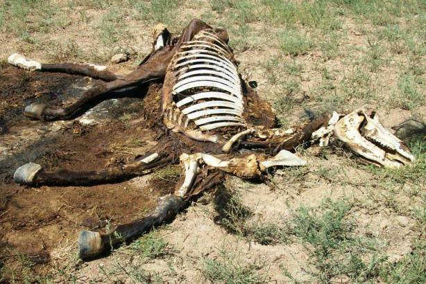

Marley Woods で発生した馬が肉片となって飛散した事件の謎を解く

(image source : www.ufonut.com )
（上の画像は下記の事件を連想させる全く別の地域で発生した事件のもの）
(2022-08-02 begin)
この事件の詳細は後述の Thomas Ferrario : Marley Woods : 馬が肉片となって飛び散った。 で説明している。
この馬の爆散事件も cattle mutilation と同様の機序で発生した筈。この地域では
the area that this horse was in 34:43 had been frequently it's in in the area to the some of the 34:48 cattle mutilations were.
と証言しているように cattle mutilation も発生している。実際、
Thomas Ferrario : Marley Woods : 大量の cattle mutilation 事例の証拠 (2021-07-31)
とも証言している。
- この事件では、馬の血が現場の周囲に飛び散っている。曰く…
what he 32:11 seen was a slaughter house in there that he said that there 32:16 were there was flesh and blood on the the lower rafters of the 32:20 barn, all the corral the wooden corral boards besides the gates, 32:26 and in virtually what had been in a matter of 20 minutes, 32:31 completely healthy horse had turned into a mass of horse 32:36 flesh in his barn as such it it like it exploded.
なぜ、この馬の場合は牛の事例とは異なって現場に飛び散った肉片や血液が残っていたのか？ 雑な推測だが、
- (a) 牛と馬の体格や解剖学的な差異
- (b) 馬小屋という準密閉空間に閉じ込められていた。
の 2点が原因ではなかろうか。実際、開放空間である牧場で馬が被害にあった事例(*1)が報告されているが、牛の場合と同様に大半の肉片や血液は消失している。ただ、a のために馬の場合は開放空間でも少量の血液が現場の土壌に残っている事例があるようだ。
- b は
he seen that corral door was ajar. And he said, Well, 31:58 that's not right. I know I closed it.
という証言から明らかなように、爆散の影響でドアが少し開いたとあるから、準密閉空間とみなしうる。ドアは馬の前方にある筈だし、爆散した馬の肉片が前方に飛び、それがドアに衝突して押し開けたとは想定しづらい。つまり、ドアが開いたのは気圧によるものと推測できる。
被害時に、牛の場合は開放空間だが、この馬は準密閉空間だった。牛の場合は開放空間で水蒸気爆発を起こし血液は微粒子として蒸散する。開口部の周囲の柔らかい組織（口の周囲、目、肛門、生殖器など）も一瞬で細片となって飛び散る。腹部や脇腹に開いた大きな穴はそこから高エネルギーのプラズマ（＝ orb）が侵入(or 接触)したため、接触した部位の毛皮や皮膚、皮下組織は一瞬で蒸散した。それゆえ、そのレーザーで切り取ったような穴が開き、切り口を顕微鏡で拡大すると微細な焼け跡が残る。
この馬は準密閉空間で水蒸気爆発が抑制された上に直近に小屋の壁があったために、肉片や血液は蒸散せずに吹き飛び(*2)、大きな塊として壁に肉片や血液が残った。
(*1)
開放空間での馬の事例は下の記事で取り上げた。
- 2010-08-11,Colorado : 2頭の馬の mutilation 事件 - http://news21c.blog.fc2.com/blog-entry-19773.html
開放空間での牛の事例は無数にあるがたとえば下の記事で取り上げた。
- 2012-09, colorado: 2頭 の cattle mutilation 事件 - http://news21c.blog.fc2.com/blog-entry-19768.html
(*2)
切断部位が吹き飛ぶ機序は（雷が直接の原因ではないことを除けば）以下と同様。
Hessdalen,Norway : UFO 目撃多発地帯で 2トンの地表が切り取られ移動 → この現象の発生機序を解説
(2022-08-02 end)
(2021-07-31 begin)Thomas Ferrario : Marley Woods : 馬が肉片となって飛び散った。
予備知識
Ted Phillips : Marley Woods（第二の Skinwalker Ranch） での怪現象 (2021-03-21) 第二の Skinwalker Ranch ：UFO が頻繁に出現する場所、 "Marley Woods" （途中：その2） (2017-06-10) 訃報：Ted R. Phillips が 2020-03-10 に死去。享年 78。 (2020-03-11)前置き
・Thomas Ferrario は故 Ted Phillips と共に Marley Woods での怪奇現象の調査をしてきた人物。その彼が Marley Woods で体験した怪奇現象について語っている。 ・彼の喋りは若干、回りくどい。だが Ted Phillips が死去した今、彼からしか聞けない話が多い。手抜き
・30:40-- 馬小屋事件。牧場主が飼っていた馬。 ・20分ほど眼を離した間に馬小屋の中の健康な馬が爆発したかのように血肉が飛び散っていた。 爆発物の残余物は見つかっていない。 ・電子レンジで肉が飛び散る現象にている。マイクロ波放射によるものではないか…と推測。音声書写（自動生成）
▼展開
30:37 this. We had a case called the horse barn incident, which we 30:43 weren't Ted was called on a Saturday morning. We weren't out 30:47 there at the time, the rancher said that you got to you got to 30:51 get out of your dead. And he said, one of his prize horses 30:56 had been affected by this. And we didn't get out there, 31:00 unfortunately for six weeks. And when we got out there, it 31:05 affected the rancher so greatly. And just briefly what that was. 31:11 The rancher had a habit of going from the house, walking the 31:15 perimeter of his past years the check in the fence line. He had 31:20 a barn where he had his favorite riding horses favorite horse in 31:24 in a corral. He always brought it some sugar in the morning. He 31:29 dropped in and seen it The horse was perfectly fine. ate the 31:33 sugar, no problems. He closed the corral, went on his way 31:37 check in the face of the fence line. And now he was within 31:41 sight of this barn the whole time. He was probably no I'd say 31:46 a quarter mile away from the barn. He ran the fence line came 31:51 back up in front of the barn. And as he glanced over at the 31:54 barn, he seen that corral door was ajar. And he said, Well, 31:58 that's not right. I know I closed it. 32:01 And what I will warn you what what follows is, is really 32:05 gruesome. He as he went in the corral, he describes as what he 32:11 seen was a slaughter house in there that he said that there 32:16 were there was flesh and blood on the the lower rafters of the 32:20 barn, all the corral the wooden corral boards besides the gates, 32:26 and in virtually what had been in a matter of 20 minutes, 32:31 completely healthy horse had turned into a mass of horse 32:36 flesh in his barn as such it it like it exploded. And we got out 32:45 there, we took some sampling. There was no residual radiation 32:50 of any type. We sent in the what we had. And now I will tell you 32:54 that the samples we took were several weeks old. So they 33:00 weren't good sampling. But there was no chemical traces found in 33:05 this No. It was to the degree that an explosive device was put 33:11 in this horse, but there was no residual of any type of 33:15 exposures. And, and here again, thanks to Ted's experience in 33:20 the field over the years and another case he involved and 33:25 I'll touch upon at some time with you a case he involved in 33:28 vnm when he was sent there, and Ted was sent all over the world 33:32 for Allen Hynek, when Alan had prior engagements, a good Megan 33:36 Arden health reasons, but tend to come across this phenomenon 33:41 before and what they had, after research they determined it was, 33:46 but it was as if this horse had been placed in a microwave oven 33:51 and exploded. And they're again, dealing with microwave, you have 33:58 no residual radiation or you better not have Yes, like when 34:02 you place a piece of meat in a microwave oven. There's not 34:05 going to be anything residual on that piece of meat or better. 34:08 And so that gets into the extreme cases of how this 34:14 intelligence now Do we believe this thing set out to destroy 34:20 this horse? We have no proof of that. Was it a residual effect 34:27 of energy? That was it was exposed to for you know, 34:33 whatever reason? You know, we just don't we don't know that 34:36 answer. But I will tell you that the area that this horse was in 34:43 had been frequently it's in in the area to the some of the 34:48 cattle mutilations were. So for what reason and how this 34:52 occurred. We don't know. But, but Ted did draw the conclusion 34:57 and other people he sent this off to He spoke with some of his 35:01 at the time some people that he had dealt with in the past and 35:04 they all felt that this was from microwave radiation done動画（1:29:03）
Thomas Ferrario and the Marley Woods Casememo
Missouri. It's the 19th most populous state in America; and it boasts more than 6 million residents. But hidden within its nearly 70,000 square miles -- is an area known as Marley Woods -- but its exact location, remains a total mystery. Ripe with paranormal activity; it rivals that of the more recognized Utah location known as Skinwalker Ranch. Though Marley Woods, unlike the Utah location which turned into a History Channel television series, has stayed away from the TV cameras and any widespread notoriety. Ted Phillips, a pioneering legend within the UFO field, spearheaded the research into this mysterious location. Although now passed away, his protege and my guest today, Thomas Ferrario, continues the hunt for the truth. He's here to step into the Vault, and explain some of the darkest, deepest, and most frightening experiences that he and others have encountered while there. And some of those experiences may have even left a lasting physical effect that will be with him for the rest of his life. Stay tuned... you're about to take a wild ride INSIDE THE BLACK VAULT. NOTE: Rural Missouri bandwidth is not ideal for livestreams, but this worked fine. The only audio hiccups we had were entirely removed, and the only obvious thing that remained was the pixelated video on Tom's side, but the audio stayed strong throughout. There are a few hits towards the end of the video, but nothing major, so all that stayed in. Despite this comment and note in the description; people will still comment on the "bad video" like I didn't notice. ;) This is why we can't have nice things... ;) (2021-07-31 end)
初出
Thomas Ferrario : Marley Woods : 馬が肉片となって飛び散った。 (2021-07-31)